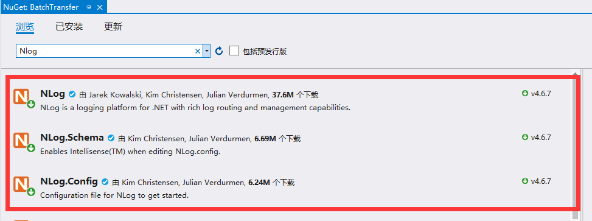

原文出处:本文由博客园博主朝闲提供。
原文连接:https://www.cnblogs.com/Zing/p/11708340.html
原文连接:https://www.cnblogs.com/Zing/p/11708340.html
一、使用Nuget安装


二、配置节点
默认NLog.config修改
三、程序调用
ILogger logger = NLog.LogManager.GetCurrentClassLogger();
private void Index_Load(object sender, EventArgs e)
{
logger.Info("日志详情");
logger.Fatal("不一样的日志级别");
}日志输出